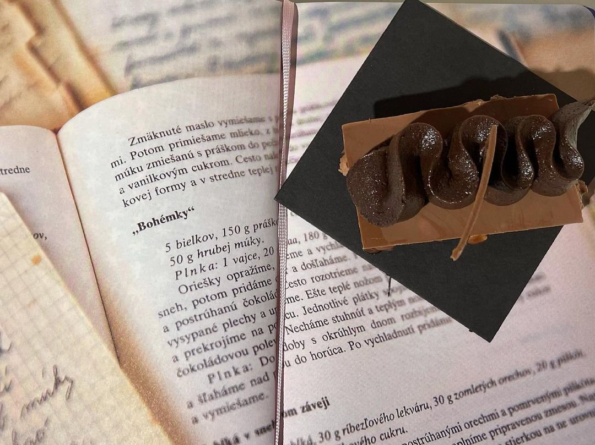

Takže moji milí, dnešný deň sme spoločne s @luciachrenko, autorkou inšpiratívnej knihy Bohémky, venovali príprave rovnomenného dezertu Bohémky, ktorý je kombináciou “starého” a
“nového”. Kedysi to bola vraj veľmi obľúbená sladkosť a my vieme, prečo! Dnes dostal nový šmrnc a poviem Vám, že stojí za hriech!
#kavickakolacik#luciachrenko#bohemky#knihabohemky#rebarbora#cukrarenrebarbora#rebarborapecie